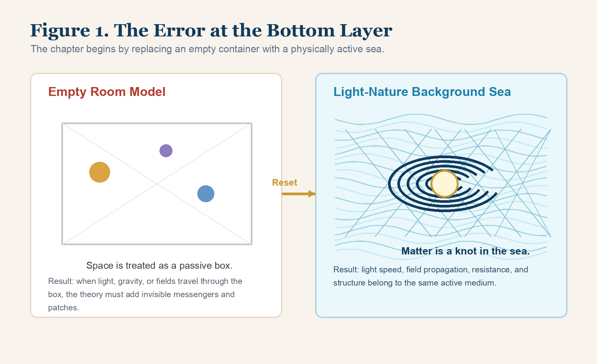
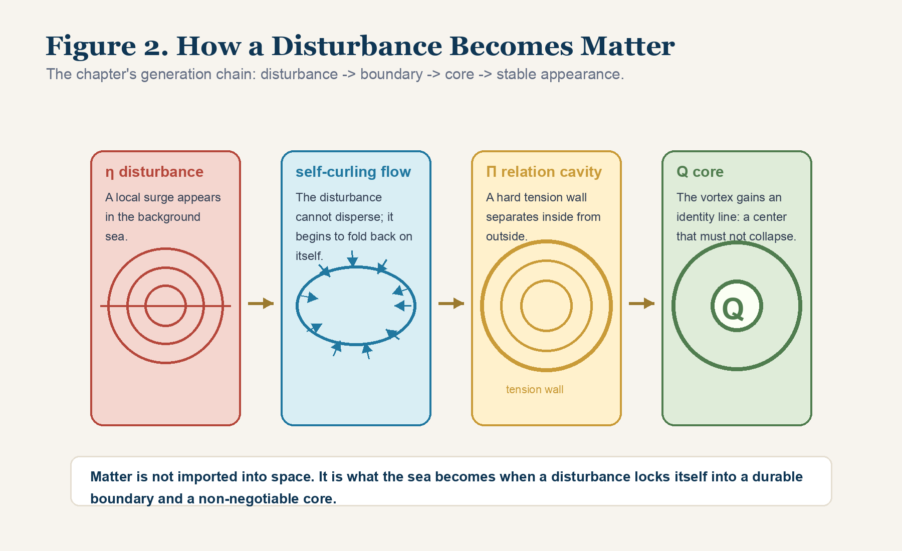
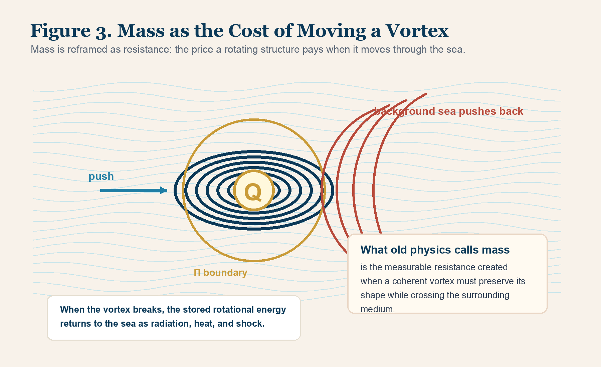

Chapter 1 | The First Heartbeat of the Universe: The Topology of Space and the Fluid of Light
1. Prisoners of the Empty Room
Before we can rebuild the bottom code of the universe, we have to face a brutal fact.
Modern physics has been standing still for almost half a century.
This does not mean nothing has happened. Enormous machines have been built. Beautiful mathematics has been written. Thousands of papers have been published. The Standard Model has become an extraordinary palace of calculation. Space telescopes have looked farther into the dark than any human eye before them. Particle colliders have smashed matter at energies that would have been unimaginable to earlier generations.
And yet the deepest questions have not moved.
Why does quantum mechanics speak in the language of probabilities, while general relativity speaks in the language of smooth geometry? Why does gravity refuse to enter the same house as the other forces? Why do galaxies rotate in a way that forces us to invent invisible “dark matter”? Why does the universe expand as if pushed by an unknown “dark energy”? Why do we keep adding hidden terms, hidden fields, hidden particles, hidden dimensions, and hidden mechanisms, while the world itself remains stubbornly whole?
Something is wrong beneath the equations.
The problem is not that human intelligence is weak. The problem is not that our mathematics is not refined enough. The problem is that the entire scientific imagination has been imprisoned inside a primitive picture of reality.
Core-Mode gives that primitive picture a name:
the Empty Room.
The Empty Room is the belief that the universe is a vast vacant container, and that things are placed inside it.
In this picture, space is a passive box. Matter is a collection of solid objects scattered through that box. A star is a thing in the box. A planet is a thing in the box. An atom is a tiny thing in the box. An electron is an even smaller thing in the box. Space itself is not supposed to do anything. It is merely the stage on which the actors move.
This picture feels natural because the animal brain was trained by survival, not by cosmology. We open a door and walk into a room. We look between objects and see gaps. We lift a cup and see empty air around it. We look up at the night sky and see blackness between stars. The senses report emptiness, and the mind turns that report into ontology.
But a useful animal picture is not necessarily a true physical picture.
Newton gave the Empty Room its classical throne. In his world, space was absolute, silent, unmoving. It existed as a fixed stage beneath all motion. Matter moved through it. Time flowed above it. The universe became a cosmic warehouse filled with particles, forces, and trajectories.
Einstein broke part of that picture, but not enough. He made the stage flexible. Space and time became spacetime. Matter could bend it. Gravity became geometry. This was a magnificent step. But the deeper illusion survived. Even in the relativistic picture, spacetime is still treated as an abstract manifold. If matter is removed, what remains is still often imagined as a kind of empty geometric possibility.
Core-Mode asks the question that the old picture avoids:
How can nothing bend?
How can nothing transmit light? How can nothing carry field structure? How can nothing set a maximum speed? How can nothing vibrate, curve, stretch, resist, and preserve information?
If space is really empty, then every physical behavior that appears in it must be smuggled in from somewhere else. When light travels, the old picture must say that a wave travels through no medium. When two charges interact, it must say that force crosses emptiness through field language. When gravity acts across cosmic distances, it must say that geometry itself carries the result.
These answers work as calculations. They do not yet work as bottom-layer reality.
They are like brilliant code running on a corrupted operating system.
When the operating system is wrong, every patch becomes more complex. You can keep adding modules. You can keep inventing new names. You can build a tower of symbols so impressive that people stop asking what it stands on. But sooner or later the old foundation takes revenge.
That revenge is everywhere.
It appears as dark matter. It appears as dark energy. It appears as the unresolved fracture between quantum theory and gravity. It appears as the strange status of the vacuum, which is said to be empty and yet filled with zero-point energy. It appears as the discomfort hidden under the word “field”, a word that often describes what the old picture needs but cannot physically touch.
The Empty Room is not merely a scientific mistake. It is a prison for imagination.
As long as we believe space is a passive nothing, we are forced to explain every real behavior as a mysterious addition to nothing. We ask how particles move through emptiness. We ask how forces leap across emptiness. We ask how fields occupy emptiness. We ask how vacuum energy lives inside emptiness.
But the correct first question is more violent:
What if emptiness was never there?

2. Resetting the Bottom Layer: The Light-Nature Background Sea
Now press the reset key of the universe.
In your mind, shatter the black container. Break the silent room. Destroy the picture of stars floating inside a vast nothing.
The first iron law of Core-Mode is this:
There is no absolute void anywhere in the universe. What we call vacuum is an extremely dense, continuous, tension-bearing superfluid medium.
Core-Mode names this universal bottom medium:
the Light-Nature Background Sea.
This name must not be read as decoration. It is not a poetic metaphor pasted over old physics. It is a change in ontological ground. It says that space itself is not an empty permission for things to exist. Space is an active physical sea. It is continuous. It is everywhere. It surrounds every object and also constitutes every object. It is not below the world as a hidden platform. It is the substance from which the world is folded.
To understand this, ordinary fluid images are helpful but not sufficient.
Water is made of molecules. Air is made of molecules. Their fluidity comes from the motion and interaction of smaller units. The Light-Nature Background Sea is not that kind of fluid. It is not made of little balls floating in a deeper emptiness. If it were, the old problem would simply return one level lower.
The background sea is space itself understood as a continuous topological medium.
It is not a container. It is the medium of containment. It is not a thing inside the universe. It is the physical actuality by which “inside” and “outside” can be distinguished at all.
Why do we not feel it?
Because we are made from it.
A fish born in deep ocean does not experience water as an object beside itself. The water is not a thing the fish meets occasionally. It is the condition of every movement, every pressure, every signal, every resistance. If the water is perfectly stable, the fish does not say, “I am surrounded by a medium.” It simply says, “This is space.”
Human beings are in the same position.
Our bodies, our instruments, our photons, our clocks, our measuring rods, our nervous systems, and the very signals by which we observe the world are all local structures inside the same background sea. We do not stand outside the medium and look back at it. We are waves and vortices of the medium trying to interpret the medium from within.
When the background sea is in a symmetric state, it becomes transparent to its own local structures. That transparency is then mistaken for emptiness.
This is the original error.
Once the background sea is restored, several mysteries stop being mysteries.
Why is the speed of light constant?
In the Empty Room model, the speed of light becomes a strange rule. It is written into the equations as a universal constant, but the deeper physical question remains suspended: why should a wave moving through nothing have a fixed transmission limit?
In Core-Mode, the answer is direct.
In any real medium, a wave’s speed depends on the medium’s density, tension, and elasticity. Sound moves at one speed in air, another in water, another in steel. The wave is not a ghost. It is the medium transmitting a disturbance under its own structural constraints.
Light is the same at the deepest level.
The speed of light, c, is the maximum geometric conduction rate of the Light-Nature Background Sea.
It is not a divine number floating above reality. It is the upper transmission limit of the background sea’s topological network.
Why does gravity act across galaxies?
Because there is no magical action through empty space. Massive rotating structures create pressure gradients and topological deformations in the same universal medium. What old physics names curvature, Core-Mode reads as a geometric pressure relation inside the background sea. Stars and galaxies are not pulling through nothing. They are embedded storms deforming the same sea that holds them.
Why does the vacuum carry energy?
Because the vacuum is not empty. Its apparent silence is the balanced state of an extremely tense medium. The energy does not need to be inserted into emptiness. It belongs to the hidden tension of the background structure itself.
Once this replacement is made, the sky clears.
The old world says:
There is empty space, and somehow fields live in it.
Core-Mode says:
There is a physically active background sea, and fields are its organized behaviors.
The old world says:
There are solid particles moving through a void.
Core-Mode says:
There are topological knots, vortices, cavities, and pressure gradients inside a continuous luminous medium.
The old world says:
The universe is a room.
Core-Mode says:
The universe is an ocean of light-bearing structure.
This is not a soft change in language. It is a reset of the bottom layer.
3. X Topology: The Geometric Reinforcement of the Universe
If the Light-Nature Background Sea is real, then it must have structure.
We cannot stop at the word “fluid.” A word can open a door, but it cannot carry a universe. Core-Mode therefore introduces the geometric skeleton of the background sea:
X topology.
X topology is the bottom-level topological weave of space. It is the hidden lattice of tension, elasticity, and directional relation through which the background sea holds itself together.
Do not imagine an ordinary grid drawn on paper. Do not imagine little metal wires. Do not imagine atoms. X topology is not a material mesh placed inside space. It is the way space itself is physically cross-braced at the deepest scale.
The image is this:
At the Planck-level limit, space is not a smooth emptiness. It is an extremely fine, tightly interlocked, three-dimensional tension network. Every local region is related to neighboring regions through geometric stress. Every possible wave, pressure shift, and field behavior must travel through this underlying pattern.
This is why the background sea can seem paradoxical. It has two qualities that appear opposite but are actually inseparable.
First, it has extreme rigidity.
The sea must be stiff enough to transmit light across astronomical distances without falling apart. High-energy cosmic signals cross billions of light-years. Electromagnetic propagation remains stable. The universe does not behave like a loose fog. It behaves like a medium with astonishing coherence.
Second, it has extreme transparency.
When the X topology is balanced, its internal tensions cancel. Like a perfectly stretched net under symmetric load, it does not reveal its own stress to ordinary observation. There is no ripple, no local imbalance, no signal for our instruments to seize. It becomes invisible because it is too evenly active, not because it is absent.
This resolves the old vacuum paradox.
How can the vacuum contain enormous zero-point energy and still appear empty?
Because the energy is not a pile of particles hiding in a box. It is the balanced tension of X topology. When all directions are held in equilibrium, the structure is present but not locally exposed. Nothing appears because everything is perfectly counterbalanced.
Only when a potential difference, Δσ, disturbs the balance does the sea become visible through effect.
Inject enough energy into one local region, and the X topology is forced to stretch. Push harder, and it bends. Push harder still, and it twists. At a critical point, the structure no longer behaves like a passing wave. It locks into itself. The medium folds around its own disturbance. A knot forms.
That knot is what old physics calls matter.
The consequence is severe:
Matter is not inserted into space.
Matter is space, folded into a durable topological wound.
The star, the stone, the atom, the electron, the cell, the human body: none of them are foreign bricks sitting in a dead container. They are local structures of the Light-Nature Background Sea, organized by X topology into persistent vortices and knots.
This is the first major verdict of the chapter:
Stop searching an empty room for tiny bricks.
There is no empty room.
There is the background sea. There is X topology. There are disturbances, knots, cavities, cores, and structured stalls.
Everything else is a surface name.
4. The Delusion of Solid Bricks
Once the universe has been filled by the Light-Nature Background Sea and stabilized by X topology, the next illusion must fall.
The illusion of solid matter.
Everyday experience seems to prove solidity. You knock on a table and feel hardness. You hit stone and injure your hand. Steel resists the hammer. Bone resists pressure. The body seems clearly made of substance.
But old physics itself already opened the door to doubt.
The Rutherford-Bohr picture told us that matter is made of atoms: a tiny nucleus with electrons around it. Later physics refined this image, but the shock remains. If an atom were enlarged to the size of a stadium, the nucleus would be like a tiny speck near the center, while the electron structure would occupy the distant stands.
The common conclusion is startling:
What we call solid matter is overwhelmingly empty by volume.
Steel seems solid, yet at the atomic scale it is mostly “empty.” Flesh seems solid, yet it is mostly “empty.” The table in front of you seems solid, yet by the old model it is almost entirely hollow.
Then the question arrives like a blade:
If your hand and the table are both almost entirely empty, why does your hand not pass through the table?
The textbook answer is electromagnetic repulsion. Electron clouds repel. Forces prevent penetration. The apparent solidity of matter is produced by field interactions.
This answer calculates, but it does not go deep enough.
Core-Mode asks:
If the space between particles is truly empty, through what physical condition is the electromagnetic repulsion carried?
Do not hide the problem behind a name. A field is not an explanation if it is only a mathematical presence in a void. A force is not understood if it is allowed to cross nothing by decree. If two almost-empty structures repel each other, the bottom layer must contain something capable of transmitting stress.
In the Light-Nature Background Sea, the answer is no longer mysterious.
Matter feels solid because it is not a collection of hard pellets. It is a collection of tension-bounded vortices.
The “emptiness” inside matter is not dead nothing. It is the same background sea, organized around intense local structures. What appears as a gap in the particle picture is active medium in the Core-Mode picture.
When your hand touches a table, two collections of vortices approach each other. Their surrounding tension boundaries do not passively overlap. They deform the background sea between them. Pressure rises. The relation cavities resist mutual penetration. Your nerves translate that pressure event into hardness and pain.
So the hand does not strike a solid brick.
It strikes a boundary event in the sea.
This is why the old “solid object” picture is not merely incomplete. It is backwards. It treats the durable appearance as primary and the underlying dynamic structure as secondary. Core-Mode reverses the order. The dynamic structure comes first. Solidity is a surface report generated when coherent vortices resist being destroyed.
5. Anatomy of a Vortex: From η Disturbance to Π Relation Cavity
If the universe is filled, matter cannot be a foreign object placed into it.
This is the decisive step.
Matter must be a behavior of the sea itself.
Imagine the Light-Nature Background Sea in a balanced state. Its X topology is tense, symmetric, and transparent. No local storm has yet appeared. Now imagine that a powerful surge enters one region. The cause of that surge will be addressed later. For now, what matters is the physical sequence.
The surge disturbs the sea.
Core-Mode calls this local disturbance:
η.
If η is weak, it behaves like an ordinary ripple. It spreads, dissipates, and disappears into the surrounding medium. This is the family of passing radiation, heat, and transient wave behavior. The sea is disturbed, but no durable identity forms.
If η is strong enough, the situation changes.
The disturbance can no longer simply flatten out. It pushes the X topology beyond the ordinary elastic range. The surrounding tension does not let the surge escape freely. The disturbance folds back toward itself. It begins to curl. It forms a rotating geometry.
At this point, the disturbance becomes a vortex.
Not a two-dimensional whirlpool on the surface of water, but a three-dimensional topological vortex inside the background sea. It is not an object made of other objects. It is a locked pattern of motion and stress. It is the sea caught in a self-maintaining fold.
This is the birth of matter.
Core-Mode states:
Matter is a structured stall of the Light-Nature Background Sea.
The phrase matters. A stall is not a dead stop. It is motion captured into a stable local pattern. A vortex in water may seem to occupy a place, yet its internal water is moving violently. Likewise, matter appears to persist, but its persistence is not stillness. It is organized rotation, pressure, boundary, and renewal.
To understand the vortex, we must dissect it.
At its center is the identity core.
Core-Mode calls this:
the Q core.
The Q core is the non-negotiable center of the vortex. It is the point or region where the rotational identity of the structure is preserved. If the Q core fails, the vortex no longer remains that vortex. It may disperse, decay, transform, or release its energy, but its original identity is gone.
Around the vortex is the boundary wall.
Core-Mode calls this:
the Π relation cavity.
The Π relation cavity is the tension boundary separating inside from outside. It is not a hard shell made of material bricks. It is a relation boundary generated by rotation, pressure, and surrounding medium. It tells the background sea: this interior pattern is not identical with the outside flow. It must be treated as a local structure.
Without a Π relation cavity, there is no stable entity.
Without a Q core, there is no identity.
Without η, there is no disturbance to begin the process.
Therefore the chain is:
η disturbance -> self-curling flow -> Π relation cavity -> Q core -> stable matter.

Now return to the table.
Why can you not pass through it?
Because the table is not a passive arrangement of hollow particles. It is a nested field of countless micro-vortices, each with relation cavities and identity constraints. Your hand is another nested field of vortices. When they meet, their Π boundaries press against each other through the same background sea.
The sensation of hardness is the local nervous translation of boundary pressure.
Pain is the body’s warning that its own relation cavities are being threatened.
There is no dead brick.
There is tension.
There is no simple collision.
There is boundary confrontation.
This is the colder, cleaner truth beneath the old surface picture.
6. The Collapse of Mass: Fluid Resistance Mistaken for Substance
Once matter has been reduced from solid brick to structured vortex, another sacred word must be opened.
Mass.
In daily life, mass feels obvious. A stone is heavy. Cotton is light. A hammer has more mass than a leaf. We speak as if mass is an internal possession, as if objects contain a quantity of “stuff” inside themselves.
But if everything is ultimately the Light-Nature Background Sea in different folded states, then what exactly is mass?
Core-Mode answers:
Mass is not the intrinsic substance of an object. Mass is the measured resistance encountered by a coherent vortex when it is forced to move through the background sea.
This can be felt with the body.
Put your hand into water and move it slowly. If the hand is relaxed and flat, the resistance is small. Now twist the hand, cup it, rotate it, push it through the water while creating turbulence. The same water pushes back harder. The resistance is not because your hand has become more “substantial.” It is because the flow pattern around the hand has become more difficult for the medium to accommodate.
Matter works similarly at the bottom layer.
A proton, for example, is not a little bead of solid stuff. It is a high-intensity vortex configuration in the background sea. When it is at rest relative to its local conditions, its rotation and surrounding X topology maintain a dynamic balance. But when you try to accelerate it, you are not merely relocating a bead. You are forcing a rotating topological structure to preserve its form while crossing the surrounding medium.
That requires work.
The vortex must maintain its Q core. Its Π relation cavity must remain coherent. The surrounding X topology must be deformed, reorganized, and pushed aside. The faster and tighter the vortex, the more severe the resistance. The more background sea is entrained by the vortex, the greater the cost of moving it.
Old physics calls that cost mass.
This reframes inertia.
Inertia is not an object’s stubbornness as a dead thing. It is the background sea’s demand that a moving vortex pay the geometric price of preserving itself. The object resists acceleration because its structure is not an isolated point. It is a local storm embedded in an active medium.
This also reframes Einstein’s famous equation:
E = mc².
In the old picture, the formula is often treated as a mysterious conversion between two different things: matter and energy. A mass can become energy. Energy can become mass. The equation is powerful, but the picture behind it remains strange.
In Core-Mode, the strangeness dissolves.
Mass is condensed rotational energy locked inside a structured vortex. Energy is not added to matter from outside. Matter is energy held in a durable topological configuration. When the configuration breaks, the locked energy returns to the background sea as radiation, heat, pressure, and shock.
An atomic explosion is not “solid matter disappearing into magic energy.” It is the rupture of relation cavities and Q-core structures. The rotation that had been trapped in microscopic vortices is released back into the sea. The sea receives it as violent propagation.
The formula no longer looks like magic.
It becomes a geometric accounting rule.
The more intense the vortex, the more energy it stores. The harder it is to move without changing its structure, the more mass it displays. The upper conduction limit of the sea, c, sets the scale of the conversion.

This is why mass must be removed from the throne of “substance.”
Mass is a cost.
Mass is resistance.
Mass is the price of carrying a stable storm through the sea without letting it lose its name.
7. From Stars to Flesh: A Topological Epic of Common Origin
The first half of this chapter breaks two old idols: empty space and solid matter.
Now the view must widen.
If the electron and the proton are small knots in the Light-Nature Background Sea, what is a star?
A star is not merely a heap of atoms. It is a gigantic nested relation cavity.
Countless micro-vortices are pressed together by gravitational pressure gradients. Their individual Π relation cavities overlap, merge, and reinforce one another. At the macroscopic level, the star becomes a colossal topological enclosure. Inside it, pressure, heat, rotation, and nuclear activity form a vast internal storm. The star shines because its internal geometric tension is being violently converted into propagating disturbances: light and heat.
The Sun is therefore not a bright ball floating inside nothing.
It is a massive storm inside the same sea that also forms your body.
What, then, is a human being?
You are not a bag of accidental atoms.
You are a nested civilization of vortices.
Your body contains roughly 10²⁷ atoms. But you are not their random pile. Life is what happens when micro-vortices learn, through evolution, to hold higher-order relation cavities together.
A cell membrane is a Π relation cavity. It draws a boundary between the living interior and the chemical outside. It says: this interior process must not be swallowed by the surrounding disorder.
The immune system is another relation cavity. It identifies and interrupts invasive vortex patterns such as viruses and harmful microbes. It is not merely a defense system in biological language. It is a boundary intelligence that protects the body’s larger Q structure.
Your skin is a macroscopic relation cavity. It separates your organism from the external world. It does not make you isolated. It makes exchange possible without dissolution.
Your brain, which later chapters will examine more closely, is one of the densest known processing regions of state translation. It receives disturbances, filters them, relates them, predicts them, and folds them back into action. It is not merely a meat machine. It is a living Q-core processor built from the sea’s own topological material.
Stand by the ocean and breathe.
Old physics may describe this as a carbon-based organism exchanging gases with an atmosphere.
That is correct at one level.
But Core-Mode sees the deeper picture:
You are a nested storm of roughly 10²⁷ vortices, standing inside the greater ocean of the Light-Nature Background Sea, exchanging tension with the universe at every breath. Each inhalation reorganizes chemical vortices. Each heartbeat preserves a boundary. Each step pushes against the medium. Each thought is a local state translation inside a living topological engine.
You are not an orphan thrown into a dark cosmic room.
You are the sea, folded into a body.
You are the sea, learning to feel itself from the inside.
You are the sea, opening eyes.
This is not sentimental comfort. It is the consequence of removing the Empty Room. Once the void is gone, isolation is no longer the bottom truth. Relation is. Continuity is. Boundary is. Transformation is.
The distance between you and the stars is real at the level of measurement, but it is not absolute separation at the level of substance. You and the stars are different storms in one continuous background sea.
The old universe was lonely because it began with emptiness.
The Core-Mode universe is severe, but it is not lonely.
Everything is connected because everything is made from the same topological ocean.
8. Life and Death: The Opening and Collapse of a Relation Cavity
This new ground changes even the meaning of death.
Human beings fear death because the Empty Room model makes existence look like a pile of objects temporarily assembled in a void. Under that picture, death is the scattering of the pile. The body breaks. The pieces fall away. The person vanishes into darkness.
That is the metaphysics of the empty container.
Core-Mode removes it.
If there are no solid bricks, then death cannot be the disappearance of a solid brick. If there is no absolute void, then death cannot be falling into nothing. If life is a coherent relation cavity in the Light-Nature Background Sea, then death must be understood as a change in that cavity’s ability to maintain itself.
Life is a great act of topological holding.
At birth, a local structure enters the world carrying potential difference, Δσ. It opens a relation cavity. It begins to defend an inside against an outside. It must maintain a Q core across time. It must eat, breathe, learn, repair, sleep, and adapt. Every day, it pays the dissipation tax D. Every moment, it resists being flattened back into the surrounding sea.
To live is to keep a boundary open.
This is why life is magnificent and exhausting.
Your organism must continuously maintain structure against entropy, injury, confusion, invasion, pressure, and decay. The body is not a statue. It is a war of renewal. Your cells die and are replaced. Your proteins fold and unfold. Your immune system patrols. Your nervous system updates. Your memory edits itself. Your identity feels stable because your Q core keeps translating change into continuity.
Death is the moment when this maintenance can no longer hold.
The Π relation cavity collapses. The Q core stops preserving the same organized identity. The body’s nested vortices do not fall into nothing. They return to the larger sea of processes. Energy disperses. Matter enters other cycles. Chemical patterns become soil, air, water, heat, plant, animal, and future life.
From the old view, this is loss.
From Core-Mode, it is release.
The local structured stall relaxes. The storm that had spent a lifetime holding its boundary loosens its grip. What was once defended as “me” becomes available again to the wider ocean.
This does not cheapen life. It dignifies it.
Life is not meaningful because it escapes the universe. Life is meaningful because the universe folds itself into a structure capable of saying “I” for a while. The temporary nature of that structure does not make it unreal. A vortex is real even if it later dissolves. A song is real even after the last note fades. A flame is real even when it returns heat to the air.
Your life is a local victory of form against dissolution.
Your death is not an erasure into void. It is the closing of one relation cavity and the return of its energy and material to the background sea from which it never truly separated.
This is the dignity Core-Mode gives to life:
Do not imagine yourself as a lonely object awaiting deletion.
You are a storm held open by courage, metabolism, memory, love, tension, and repair.
You were never outside the sea.
You will never be outside it.
9. Escape Success: Standing on the New Foundation
We have now completed the first escape.
The absolute vacuum has been shattered.
Newton’s silent stage has been broken. Einstein’s geometric manifold has been forced to reveal its physical underlayer. The solid atom has lost its throne. The old model of isolated objects moving through a dead container has been replaced by a universe of medium, topology, vortex, cavity, and core.
The new foundation is the Light-Nature Background Sea.
In this world:
There is no absolute void. There is X topology, tightly interlocked and tension-bearing.
There is no dead matter. There are structured vortices of the sea.
There is no simple solidity. There are Π relation cavities resisting mutual penetration.
There is no mass as substance. There is geometric resistance, the cost of carrying a vortex through the medium.
There is no isolated life. There are nested relation cavities maintaining Q cores inside a greater ocean.
There is no death as falling into nothing. There is the collapse of a local boundary and the return of its energy to the sea.
This is a cleaner universe.
It is not softer. It is not comforting in the cheap sense. It is stricter than the old one because it removes the fog. It does not allow “nothing” to perform physical miracles. It does not allow a field to hide inside a word. It does not allow matter to pretend it is a brick when its own microstructure says otherwise. It forces every appearance to pay its bill in topology, tension, relation, and state.
But it is also more beautiful.
Because once the Empty Room falls, the universe is no longer a warehouse of lonely pieces. It is a living engine of structured flow. It is not chaos wearing equations. It is a luminous sea forming knots, storms, stars, cells, minds, and civilizations.
The first chapter has done only one thing:
It has changed what we mean by space.
But that one change is enough to move every other question.
If space is an active sea, then time cannot remain an independent river. If matter is a vortex, then identity must be a maintained core. If mass is resistance, then motion is a negotiation with the medium. If life is a relation cavity, then intelligence must be a higher-order state translation.
The engine has started.
The next illusion is already waiting.
It is the most familiar ghost in all of physics, the one we obey every morning and mourn every night.
Time.
The old world says time flows.
Core-Mode will ask whether it ever flowed at all.
Reader Comments
Reading is open. Comments are submitted for review before public display.